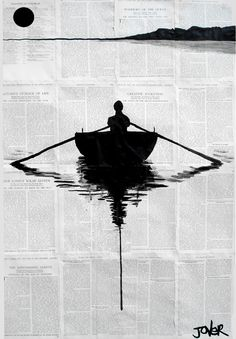
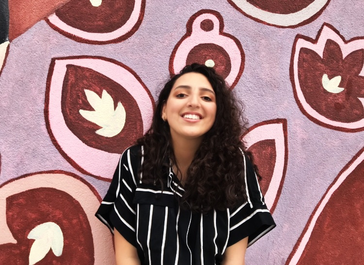

Beauty
Welkom op mijn website
Mijn naam is Hanae en dit is mijn website over beauty.
Over Mij
Mijn volledige naam is Hanae El Kandoussi en ik ben 16 jaar oud. Ik woon in Den Bosch in Nederland. Ik ben geboren op 14 februari 2002 en dus valentijnsdag. Mijn liedfde voor beauty begon al toen ik een klein meisje was. Ik heb het altijd gaaf gevonden en leuk om meet te spelen. Ik zie het als een je eigen visite kaartje. Natuurlijk kunnen we niet bepalen of we knap zijn, maar we kunnen wel controleren hoe verzorgd we overkomen. Ik heb make-up en haar Altijd heel leuk gevonden en het idee dat je je daarmee artestiek kan uiten vind ik geweldig. Ik kan totaal niet tekenen dus dan eidig je ook eerder bij styling.
Ik maak deze website, omdat het me leuk leek om te schrijven over een onderwerp dat me intereseert. Wat dingetjes over mij. Ik ben op dezelfde dag geboren als een van mijn beste vriendinnen (alleen ben ik 5 uur ouder). Ik zit in 5 VWO op het ds. pierson college. Mijn ouders zijn beiden in marokko geboren. Papa is in 1990 naar nederland gekomen en mama in 2000. Ik heb de oudste thuis en heb een zusje (amal) van 13 en een broertje (Zakaria) van 7. Daarnaast ben ik ook heel luid en kan ik nooit mijn mond houden, maar wel op een gezellige manier.
Ik maak deze website zodat jullie een beetje kan helpen terwijl ik jullie tegelijkertijd amuzeer. Er zit veel tijd en werk in dus niet al te gemeen zijn (alvast bednkt).